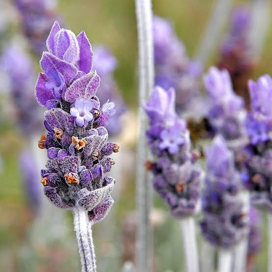

Patrimoine Botanique & Culinaire

L'Art Nutritionnel du Harbit
Une exploration complète des ressources végétales spontanées de la région de Jijel
Découvrez comment la biodiversité végétale algérienne se transforme en un plat traditionnel équilibré, riche en histoire et en bienfaits pour la santé.
3. Le Plat « Harbit »
Le « Harbit » est un plat traditionnel végétarien originaire de la région de Jijel, caractérisé par l'utilisation de plantes sauvages comestibles locales. Il reflète un savoir-faire culinaire ancien basé sur l'exploitation des ressources végétales spontanées.
Constituants principaux :
 Hmida (Oseille)
Hmida (Oseille)Vitamine C, acides organiques, antioxydants
 Mjir (Chenopodium sp.)
Mjir (Chenopodium sp.)Fibres, micronutriments

Halhal (Lavandula stoechas)Composés bioactifs, propriétés médicinales
 Oil & Huile d'olive
Oil & Huile d'oliveAntimicrobien, cardioprotecteur
Analyse des méthodes de cuisson
Cuisson des plantes (ébullition ou vapeur) :
- Diminue l'acidité et améliore la digestibilité
- Permet l'élimination de certains composés antinutritionnels
- Peut entraîner une perte partielle de vitamines hydrosolubles
Assaisonnement à l'huile d'olive :
- Améliore la biodisponibilité des nutriments liposolubles
- Apporte une valeur énergétique équilibrée
- Renforce les propriétés antioxydantes du plat